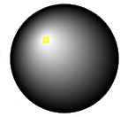

About the project
This is a beta version of the Ruthwell Cross edition published by the [ Visionary Cross project] by means of the [3DHOP viewer]. This edition is intended for use by students, teachers, and members of the public who are interested in exploring the cross and learning more about it. The final version will contain tools required for more advanced applications. Should you encounter any bugs, glitches, lack of functionality or other problems on the website, please let us know immediately by writing an email to visionarycrossproject@gmail.com. Your help in this regard is greatly appreciated.
CREDITS
Project directionProf. Daniel O'Donnell, University of Lethbridge
Prof. Roberto Rosselli Del Turco, University of Torino
ISTI research support
Marco Callieri, CNR/ISTI
3DHOP customization
Jurgen Memaj, University of Pisa
Help
Left side toolbar Home - Restore the model to the default view
Home - Restore the model to the default view
 Zoom in - Allows you to magnify the view on a point
Zoom in - Allows you to magnify the view on a point
 Zoom out - Allows you to magnify the view on a point
Zoom out - Allows you to magnify the view on a point
- Toggle light mode - Turns light on/off (default: on)
 Toggle light direction - Turns the light direction control on the right side of the
screen (default: off)
Toggle light direction - Turns the light direction control on the right side of the
screen (default: off)
 Toggle color - Allows you to display the model with or without color textures
Toggle color - Allows you to display the model with or without color textures
 Hotspots - Show hotspots on the model
Hotspots - Show hotspots on the model
 Screenshot - Save a screenshot of the model in the current position / view
Screenshot - Save a screenshot of the model in the current position / view
 Measure tool - Allows you to measure distances on the model
Measure tool - Allows you to measure distances on the model
- Info - Opens lightbox with project information screen
 Full Screen - Opens the platform to full screen
Full Screen - Opens the platform to full screen
- Orientation - Move the model to face North, South, West, East
- Up / Down - Move the model on the vertical axis, you can also drag the model using the right mouse button to perform the same action
- Left / Right - Move the model on the horizontal axis, you can also drag the model using the right mouse button to perform the same action
- TOP - Move the model to show the top
-  Light direction - Move the yellow dot in the black circle to change light direction (to be activated via the "Toggle light direction" button, default is off)
Using the mouse
Using the left mouse button you will be able to rotate and tilt the model. Using the right mouse button you can drag it on the horizontal and vertical axis.